Seascapes, skies, and the last hour of light.Paint thick enough to catch the light.
Uzair Ali Khan works in acrylic on canvas, building form with a palette knife. The ridge a knife leaves catches the real light in a room, so the surface moves as you walk past it. That is what the paintings are made for.
- Medium
- Acrylic on canvas
- Technique
- Palette knife, impasto, glazing
- Subjects
- Seascapes, skies, landscape
- Enquiries
- Commissions & representation
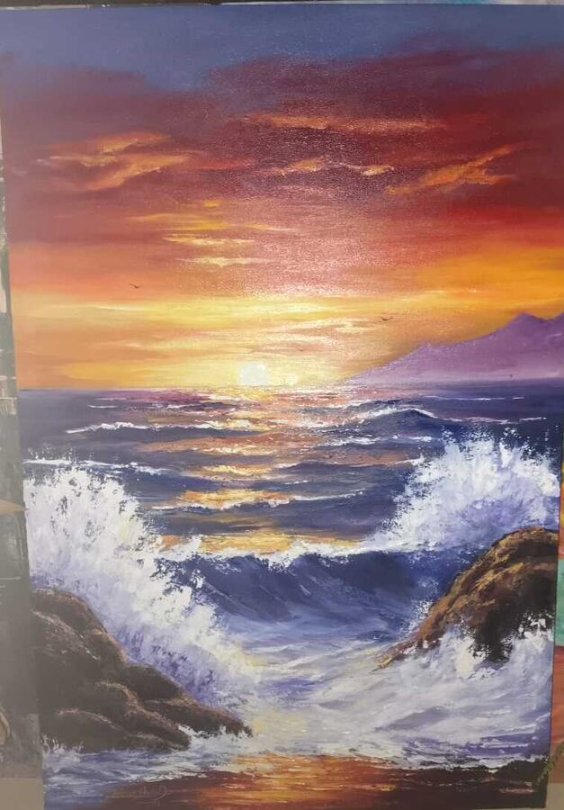
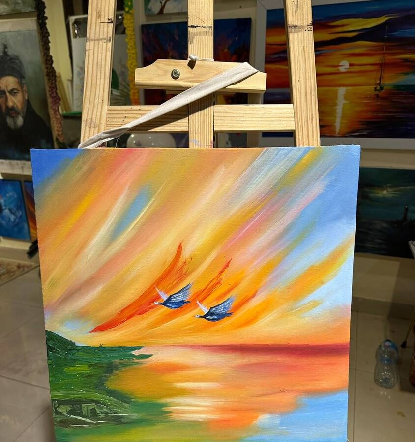
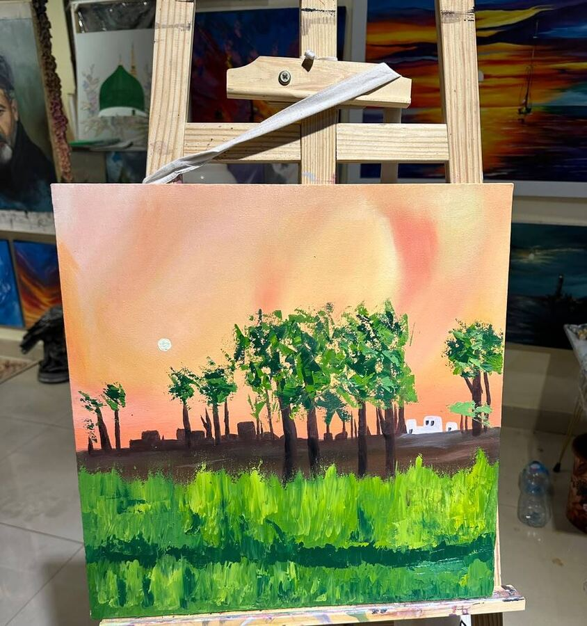
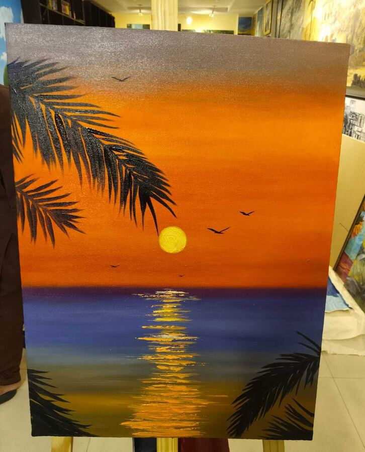
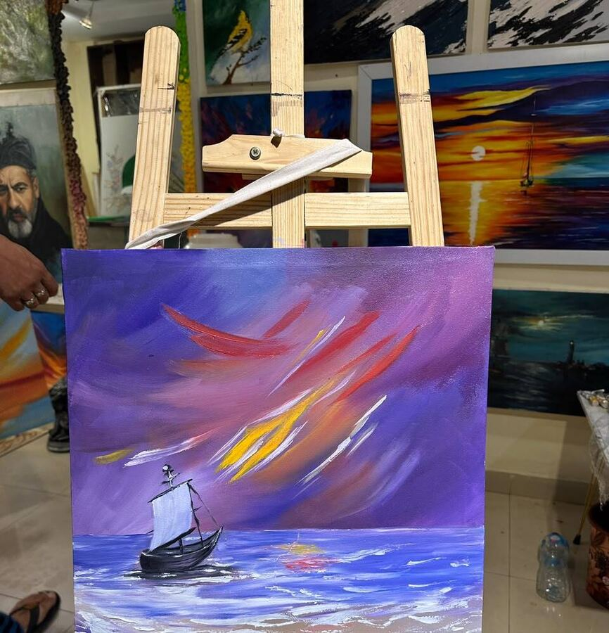
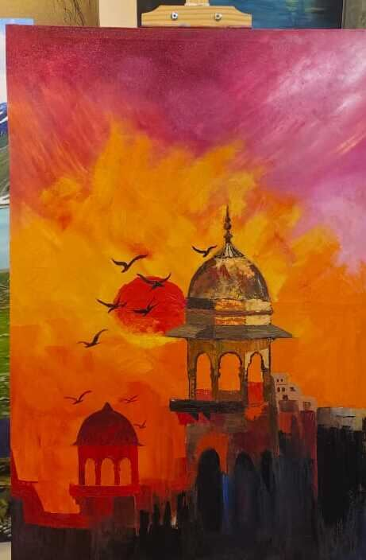
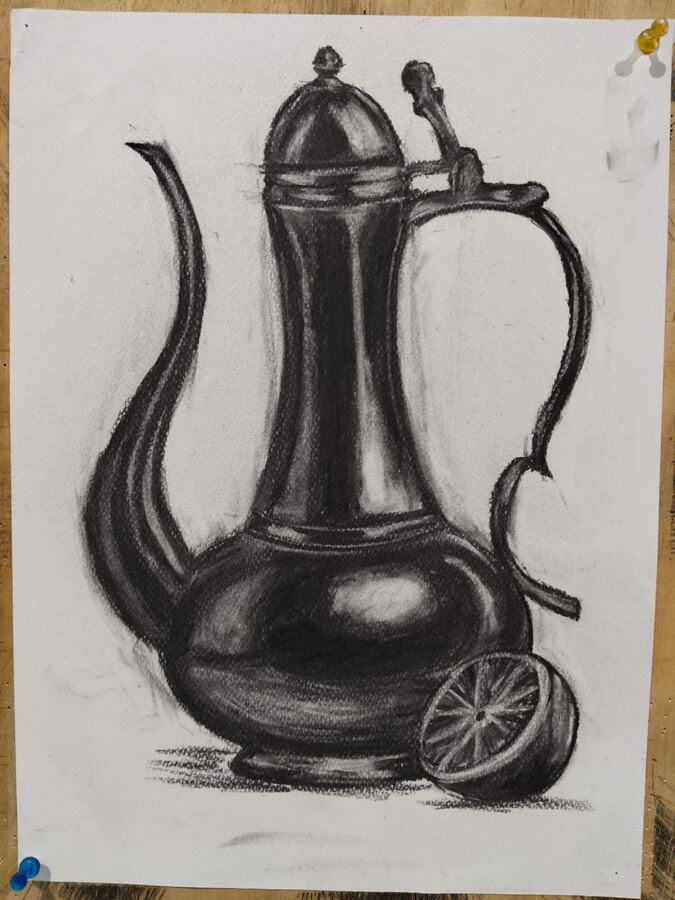
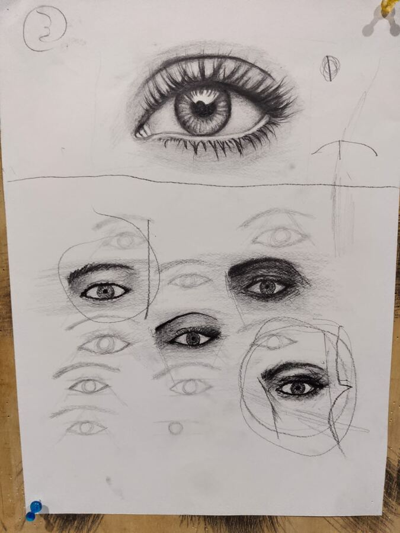
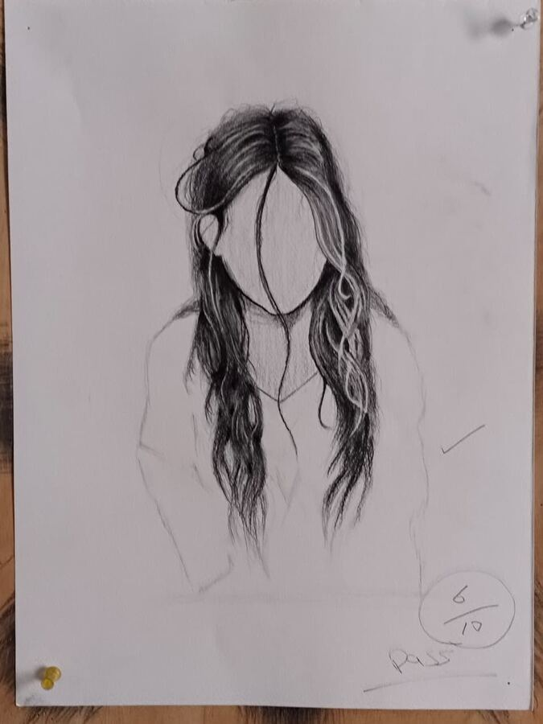
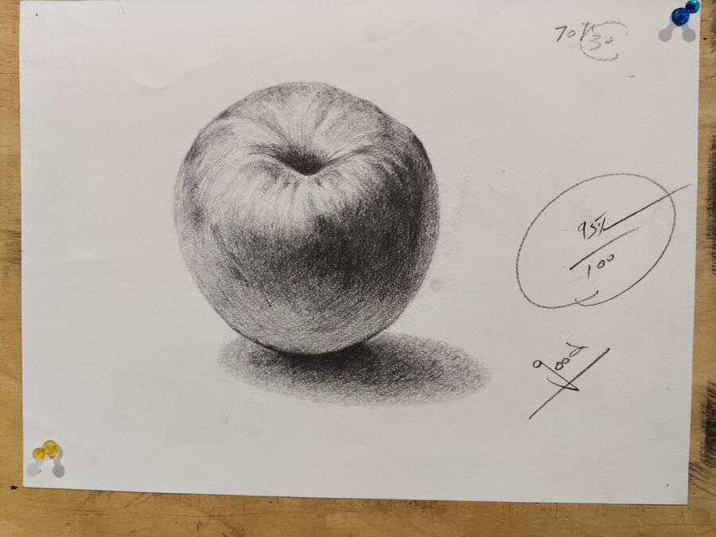
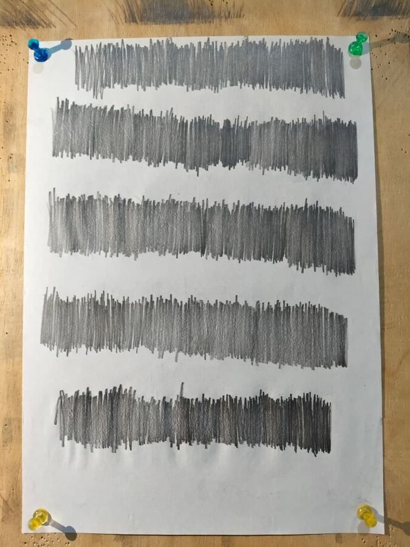
Paintings
Six canvases
Acrylic on canvas. Laid in with a knife, finished with a brush only where the knife is too blunt.
Nothing here is blended into agreement.
Every canvas is primed, grounded and underpainted before the first colour goes down, and the strokes are left where they land. All work is available, and commissions are open.
Sunset Symphony
Acrylic on canvas, 2026
Palette knife and brush
The hardest one so far. The foam is knife work laid over a dried underpainting so the white keeps a hard edge, and the light path on the water is glazed back in thin afterwards.
Enquire about this pieceChasing the Light
Acrylic on canvas, 2026
Palette knife and brush
The sky went down as one continuous sweep. The sails were cut in afterwards with the tip of the knife, so the reds sit on top of the ground instead of mixing into it.
Enquire about this pieceMoonlit Serenity
Acrylic on canvas, 2026
Brush, knife in the reflection
Painted for the reflection. The column of light is a dozen broken horizontals of the same gold, spaced wider as they come towards you — that spacing is the whole illusion.
Enquire about this pieceSailing Through the Twilight
Acrylic on canvas, 2026
Palette knife throughout
A violet ground with warm strokes dragged across it while it was still open. The sea is short unblended knife marks, left for the eye to mix at a distance.
Enquire about this pieceSunset Over Lahore
Acrylic on canvas, 2026
Brush
A city I know, reduced to one flat dark. The architecture takes no detail at all; everything that had to be solved is in the sky behind it.
Enquire about this pieceWhere the Green Comes Alive
Acrylic on canvas, 2026
Heavy knife impasto
Loaded knife strokes in the field — the paint stands off the canvas and catches real light. The sky is kept thin and flat on purpose, so the green does all the shouting.
Enquire about this pieceDrawing
Seven sheets
Graphite and charcoal on cartridge paper. One object, one light source, held until the shadow is right.
The drawing does not stop when the painting starts.
Observational work runs alongside the paintings rather than ahead of them. Nothing here is invented — each one is an object on a table, drawn from where it sat.
Portrait studies
Fifteen sheets
Features drawn in sets, never singly. Repetition is the method, not a stage of it.
A face is built from parts that each have to be right.
Eyes, noses, mouths, ears, hair — each repeated across a sheet until the form is automatic and the attention is free to go somewhere harder.
Mark-making
Seven sheets
None of these is meant to be a picture. Each one holds one thing to standard.
Accuracy is maintained, not acquired.
Control of a line, a curve, a value — drilled rather than assumed, and kept in the working week. Most portfolios leave this out. It is here because it is what the paintings are standing on.
Circles and straight lines
Drawn from the elbow, never with a ruler.
Radial hatching
Every line aimed at one point, kept even.
Value bands
Five separate greys out of one pencil.
Spirals and solids
Holding pressure steady through a turn.
Graphite discs
Scribbled until the paper disappears.
Ellipses and boxes
Perspective, before it can be fudged.
Cross-hatching sheets
Crossed until the grid stops reading as lines.
None of this is warm-up. It is how the hand stays honest.
How a canvas gets made
Four stages
In order, every time. Skipping a stage shows up three stages later.
Most of the work happens before the colour does.
Prime the surface
Raw canvas drinks paint. Two coats of gesso over primer, sanded between, gives a surface that takes colour and holds it on top instead of swallowing it. It also decides how the knife will feel later — a rough ground drags, a smooth one lets the stroke run.
Lay an underpainting
A thin base layer in one or two colours kills the white and sets the value structure before anything is committed. Every colour after it is judged against that ground rather than against bare canvas, which is what makes the judgement possible at all.
Block in with the knife
Large shapes first, loaded flat, no blending. The knife leaves a clean edge and a ridge of paint that a brush cannot make, and the ridge catches real light in the room — which is why a knife painting changes as you walk past it.
Glaze, then cut the light back in
Thin transparent passes settle the colour down where it shouted. The final highlights go on last and once, with the tip of the knife — if they get reworked they turn grey, and the painting loses the thing it was made for.
About
Uzair Ali Khan
Lahore, Pakistan. Commissions, representation and studio work.
I paint seascapes, skies and landscape in acrylic, and I work primarily with a palette knife.
A brush blends. A knife puts an edge down and leaves it there, and it leaves a ridge of paint that catches the actual light in a room — so the painting changes as you move past it. That is the effect I build for, and acrylic suits it: fast enough to layer, thick enough to hold the mark.
The work is structured rather than improvised. Every canvas is primed and grounded, then underpainted, so that colour is judged against a value structure instead of against bare white. Observational drawing, portrait study and mark-making run alongside the painting and are shown here for the same reason a gallery shows working drawings: they are the practice, not a preface to it.
- Medium
- Acrylic on canvas
- Technique
- Palette knife, impasto, glazing, underpainting
- Drawing
- Graphite and charcoal on paper
- Subjects
- Seascapes and skies, landscape, still life, portraiture
- Training
- Formal studio training in drawing and painting; bachelor's degree
- Available for
- Commissions, gallery representation, studio and assistant roles
Get in touch
Usually within a day
Commissions, studio visits, and work.
Tell me the size, the subject and the wall. Work can be seen in person at the studio by arrangement.